Abstract
We analyzed cross-platform price discrepancies between Kalshi (CFTC-regulated event contracts) and Polymarket (on-chain prediction market), with the goal of determining whether more complex models improve arbitrage detection. To do this, we built an end-to-end system that matches contracts using sentence embeddings, applies a 10-rule structural quality filter, engineers 51 features in real time, and trains 4 model tiers. We used linear regression, XGBoost, sequence models (GRU, LSTM), and PPO models with and without an autoencoder anomaly filter. The evaluation uses a framework with 6,802 training rows and 1,673 test rows across 144 matched pairs, with a standardized $100 position size. Results show that simpler models perform the best. Linear regression achieves a per-trade Sharpe ratio of 0.501 with +15.0 bps alpha, roughly matching XGBoost’s ratio of 0.499 with +14.9 bps alpha. Conversely, more complex models underperformed. LSTM had a per-trade Sharpe ratio of (0.473 / +14.3 bps), GRU had (0.459 / +14.0 bps), PPO-Raw (+9.6 bps), and PPO with an autoencoder (+0.5 bps). However, all the models are profitable in every walk-forward window, with Sharpe ratios rising from 0.31 to 0.53 over time.
A pre-submission adversarial audit (AUDIT_REPORT.md) found that the original 80/20 row-index split bridged 142 of 144 pairs (an embargo violation). After correcting this with a pair-stratified retraining, performance remained stable: Sharpe of 0.516 and +15.7 bps alpha, with a minor drift of +2.99%, which remains within the bootstrap confidence interval.
Overall, the per-trade edge is consistent and stable. The key takeaway is that at this scale, increasing model complexity doesn’t improve performance, and rather has the opposite effect. The alpha lives in the matching pipeline and the oil/commodities asset class, not in the models.
1. Introduction
Prediction markets allow users to trade contracts that pay $1 if an event happens (e.g., “Will CPI inflation exceed 3.0% in May 2026?”) and $0 otherwise. Therefore, prices can be interpreted as probabilities. Two major platforms, Kalshi (CFTC-regulated, since 2021) and Polymarket (on-chain via Polygon, since 2020), often list contracts on the same events but at different prices. These price differences can persist for hours or even days, creating potential arbitrage opportunities if they can be identified, matched, and traded correctly before they close.
The central research question is:
Does increasing model complexity improve arbitrage detection in cross-platform prediction markets, and if so, when is that complexity justified?
This question matters for two main reasons. Academically, Kang (2026) argues that in structured financial data, carefully designed features often outperform complex deep learning models. From a practical perspective, prediction markets are growing quickly (over $1 billion traded on Polymarket during the 2024 U.S. election), so understanding which modeling approach adds value is a relevant question for market participants.
We approach this by building a full system that collects data, trades live, and compares multiple models under the same conditions.
Some background helps frame what we are predicting. Each platform quotes a price for the same contract, and the gap between those two prices is what we call the spread. If both platforms list the same event, that spread should shrink to zero by the time the contract resolves, give or take fees. What we are trying to predict is whether the spread will widen or tighten over the next hour-long bar. Earlier work by Manski (2006) and Wolfers & Zitzewitz (2004) established that prediction-market prices are reasonably efficient probability forecasts, but cross-platform price differences have not been studied as much. Bürgi, Deng & Whelan (2026) document a favorite-longshot bias on Kalshi: low-priced contracts win less often than their price implies, and high-priced contracts win slightly more. If that bias shows up unevenly across the two platforms, it becomes one source of cross-platform spread.
We also use a handful of well-known liquidity measures from the market microstructure literature: Amihud’s (2002) illiquidity ratio, the Corwin–Schultz (2012) high-low bid-ask spread, Kyle’s (1985) λ, and Roll’s (1984) implied spread. We do not need to spell out the full equations here. The intuition is enough: each measure produces a single number per platform that summarizes how easy it is to trade on that side. We compute these numbers separately for Kalshi and Polymarket, then feed the difference between the two into our models. These measures are standard in equity markets, but to our knowledge they have not been applied systematically to predicting spreads on prediction markets. Finally, a recurring finding in machine learning is that on tabular data of moderate size, gradient-boosted trees tend to match or beat deep neural networks (Grinsztajn et al. 2022). Our results are consistent with that pattern.
This paper contributes the following: a working end-to-end arbitrage system covering data ingestion through live paper-trading on Boston University’s Shared Computing Cluster, monitoring up to 11,582 matched pairs at peak; a complexity-vs-performance benchmark across four model tiers using one shared evaluation protocol; an 11-window walk-forward validation that shows the edge is stable and improving over time; the parameter searches our proposal asked for, over lookback windows and minimum-spread thresholds; an honest Sharpe accounting that survived a pre-submission adversarial audit; and a negative result on PPO that we report transparently rather than hide.
2. Methodology
2.1 Data Sources and Matching
Kalshi exposes a public REST API (api.elections.kalshi.com/trade-api/v2) that does not require authentication. We pull hourly OHLCV candlesticks. Kalshi splits its market history at roughly a three-month cutoff, so we query a /historical/cutoff endpoint to figure out which API to call for each market. Polymarket is more complicated: it has three separate APIs, Gamma for metadata, CLOB for live order books and prices, and a Data API for trades on resolved markets. Polymarket also uses opaque numeric token IDs, so we look up clobTokenIds via Gamma and use those to query CLOB. One non-obvious gotcha that cost us several days: Gamma’s singular condition_id= query parameter returns unrelated random markets instead of erroring out, while the plural condition_ids= returns the exact match. The /prices-history endpoint also returns empty data for resolved markets, so for those we have to reconstruct prices from individual trade records.
Once we have the markets, we have to pair the same event across the two platforms. We do this in two steps. First, we embed each contract’s concatenated title and description using a sentence-transformer model (all-MiniLM-L6-v2, 384-dimensional; Reimers & Gurevych 2019) and compute cosine similarity in one normalized matrix multiplication. This runs in about 80 seconds, compared to roughly 6.6 hours for the keyword-based approach we started with, a 300× speedup. But semantic similarity alone is not enough. “NBA Finals winner” and “NBA MVP” embed close together, even though they are different events. So we layer 10 structural quality-filter rules on top: a sports wins-vs-champion check, Fed meeting-month matching, cabinet confirmation-vs-nomination, state-specific versus national commodity guards, an exact match between CPI / PCE / core-CPI variants, a ±2-day expiry window, exact strike comparison for futures, numeric-threshold exactness (so “$50/bbl” never matches “$55/bbl”), event-key disambiguation (“Game 4” versus “Game 5”), and a category-consistency guard. The filter rejected 140 of 615 candidate pairs (22.8%). The impact was substantial. At the first large-scale backtest, Linear Regression P&L went from −$5.28 to +$5.45, a +$10.73 swing purely from removing structurally bad matches, without changing the model. Data quality matters more than model choice at this scale.
2.2 Feature Engineering
We engineer 59 raw features and use 51 of them in the models, after dropping columns that contain NaNs or have no variance. They fall into five groups.
The first group is the 18 raw OHLCV columns from each platform (open, high, low, close, volume, VWAP for both Kalshi and Polymarket). The second group is 6 simple cross-platform combinations: the spread, the mid-price, the dollar-volume ratio between the two sides, and so on. The third group is 9 rolling and momentum features that summarize how the spread has moved over the last few bars (for example, the 6-bar momentum and the z-score of the spread). The fourth group is 13 classical microstructure features. We compute Amihud’s illiquidity, Corwin–Schultz spread, Kyle’s λ, Roll’s implied spread, and Bekker–Parkinson volatility separately on each platform, and then take the difference between the two platforms as the feature. The intuition is that if Kalshi is suddenly less liquid than Polymarket, the more illiquid side is more likely to move toward the other. The fifth group is 13 prediction-market-specific features such as a favorite-longshot bias indicator and a near-expiry flag.
These features are neutral or slightly positive on the historical dataset. Most contracts in our pair universe have only 47 bars on average, which is too short for rolling-window microstructure estimators to stabilize. We expect these features to become more useful as the live system collects longer histories.
2.3 Model Tiers
All models share the same train/test split (time-ordered 80/20, no shuffling), the same prediction target (the next-bar change in the spread), and the same feature set.
- Tier 0, Naive baselines. Naive-closes assumes the spread fully closes by the time the contract resolves. Volume-higher-wins assumes the higher-volume platform is the correct side.
- Tier 1, Regression. Linear Regression (scikit-learn). XGBoost, hyperparameter-searched across tree depth (3, 5, 7, 9), learning rate (0.01, 0.05, 0.1, 0.3), and number of estimators (100, 300, 500), for 48 total configurations.
- Tier 2, Sequence models. GRU with 64 hidden units, one layer, a 24-bar lookback, Adam optimizer at learning rate 1e-3, and early stopping. LSTM with the same architecture but using an
LSTMCell. We also tried a Temporal Fusion Transformer (TFT) configured with small-data hyperparameters (hidden size 8, three-quantile loss); it did not converge (see §3.4). - Tier 3, Reinforcement learning. PPO-Raw runs PPO (Schulman et al. 2017) on the 51-feature vector with three actions (buy the spread, sell the spread, or hold) and a mark-to-market reward, using
stable-baselines3. PPO-Filtered prepends a 3-layer symmetric autoencoder with a bottleneck of 8 dimensions; the autoencoder flags anomaly windows, and PPO only trades during those windows.
2.4 Evaluation Protocol
We use five evaluation regimes, each looking at the same models from a different angle, so a result that survives all five is harder to dismiss as a coincidence of one particular setup. (a) Single-split backtest: chronological 80/20, reporting RMSE, MAE, directional accuracy, simulated P&L at the 2 percentage-point (pp) signal threshold, win rate, and per-trade Sharpe (the headline numbers in §3.1). (b) Walk-forward backtest: we combine train and test for maximum time coverage, slice the timeline into 12 equal-length windows, and walk forward through them. Each window is tested using a model trained only on the windows before it (an expanding training window). The first window has no training data, leaving 11 evaluation windows. If the edge is real and stable, every window should be profitable; if it is improving with more data, per-trade Sharpe should trend upward. (c) Per-category breakdown: test rows stratified by contract category (sports, politics, crypto, oil, weather, and so on), using deterministic rules over Kalshi tickers and Polymarket slugs, to show where the edge actually concentrates. (d) Data-scaling curve: retrain on slices of 50, 100, 250, 500, 1000, and 2000 bars per pair and plot P&L against training size, to test whether “simpler wins” holds as the dataset grows. (e) Live paper trading on BU SCC with a 15-minute trade cycle, a 3-hour market-discovery batch, and a 6-hour retrain batch, with redundant fallback workflows on GitHub Actions for SCC maintenance windows.
Training cost is small enough to be a non-issue: Tier-1 models train in under 15 seconds on a single CPU core, Tier-2 takes about 3 minutes per epoch with early stopping at 10 to 15 epochs, and Tier-3 takes 20 to 40 minutes for PPO to converge. The live system uses an equal-weight ensemble of Linear Regression and XGBoost, plus a concordance filter that skips trades when the two models disagree on direction. We also use content-addressed pair IDs derived deterministically from the normalized Kalshi ticker and Polymarket token ID, which fixed an earlier bug where three different code paths disagreed on what a live_NNNN pair ID meant, causing 25 positions to track the wrong markets.
2.5 Infrastructure Lessons
Three infrastructure bugs materially shaped this project, and they are worth flagging because each one looks like a model problem on the surface.
The first was that Kalshi’s /events endpoint silently returned HTTP 429 (“too many requests”) on roughly 40% of calls, dropping entire commodity series without any error visible in our logs. Adding exponential backoff and pacing requests at 250 ms per series took our commodity pair count from 65 to 506. The second was that Polymarket’s pagination defaulted too shallow: it stopped at 5,000 markets, but WTI oil markets started at offset 15,305 and were completely invisible until we raised the page limit from 10 to 60. The third was Gamma’s condition_id= parameter (singular), which returned unrelated random markets instead of erroring; the fix to condition_ids= (plural) was one character but cost several days of debugging.
The pattern is consistent: APIs that fail silently in ways that look exactly like a broken model. Infrastructure monitoring has to come before model tuning, not after.
3. Results
3.1 Headline Model Comparison
Table 1 reports the single-split backtest at a 2 pp signal threshold on the full 1,673-row test set. All numbers come directly from a canonical results file (experiments/results/canonical/headline.json) generated under a fixed seed (42), the 2 pp threshold, and a $100 position size. The two leading columns are per-trade Sharpe ratio and per-trade alpha in basis points; cumulative dollar P&L follows.
| Tier | Model | RMSE | Dir. Acc. | Sharpe (per-trade) | Alpha (bps/trade) | P&L ($100 pos) | Win Rate | # trades |
|---|---|---|---|---|---|---|---|---|
| 0 | Naive (closes) | 0.499 | 47.7% | 0.125 | +4.0 | +$58.12 | 47.9% | 1460 |
| 0 | Volume (higher wins) | 0.457 | 47.7% | 0.131 | +4.2 | +$59.81 | 48.1% | 1440 |
| 1 | Linear Regression | 0.306 | 56.9% | 0.501 | +15.0 | +$232.67 | 57.8% | 1549 |
| 1 | XGBoost (depth 3) | 0.290 | 56.6% | 0.499 | +14.9 | +$232.83 | 57.4% | 1559 |
| 2 | LSTM | 0.291 | 65.5% | 0.473 | +14.3 | +$221.84 | 56.5% | 1547 |
| 2 | GRU | 0.293 | 64.3% | 0.459 | +14.0 | +$212.50 | 55.8% | 1517 |
| 2 | TFT | 0.326 | 51.7% | 0.155 | +5.5 | +$6.57 | 37.5% | 120 |
| 3 | PPO-Raw | 0.319 | 60.5% | 0.306 | +9.6 | +$158.15 | 52.2% | 1656 |
| 3 | PPO + Autoencoder | 0.327 | 27.2% | 0.014 | +0.5 | +$4.61 | 43.2% | 899 |
Note: TFT did not converge at N=6,802 (30-epoch budget, hidden_size=8); see §3.4.
The ranking is unambiguous: Tier 1 beats Tier 2, which beats Tier 3. The gap from Tier 0 to Tier 1 is large (per-trade alpha jumps from about 4 bps to 15 bps, roughly a 4× improvement). The gap from Tier 1 to Tier 2 is small (0.7 to 1.0 bps). And PPO with the autoencoder collapses to essentially zero edge. Linear Regression and XGBoost are essentially tied (Sharpe 0.501 versus 0.499, +15.0 versus +14.9 bps), so within Tier 1 there is no statistically defensible reason to prefer one over the other on this dataset. The 95% bootstrap confidence intervals on RMSE (Fig. 7) overlap heavily across LR, XGBoost, GRU, and LSTM, even though P&L separates them cleanly. This tells us the P&L gap is driven by which side of zero each model predicts (directional accuracy and trade selection), not by raw regression error.
3.2 Walk-Forward Validation
We evaluate each model across 11 expanding-window splits spanning January through April 2026. Per-window P&L (Fig. 1) is positive in every window for every ML model (11 of 11 windows times 4 of 4 models, with zero losing windows). This is strong evidence that the edge does not depend on a lucky train/test split. Per-trade Sharpe also trends upward across windows. Linear Regression rises from 0.307 in window 1 (357 training rows) to 0.530 in window 10 (8,012 training rows), an improvement of 73%. XGBoost shows the same pattern (0.383 to 0.540). Median per-trade Sharpe across all windows is 0.408 for LR, 0.424 for XGBoost, 0.410 for GRU, and 0.405 for LSTM, so all four ML models end up roughly tied. The comparison that matters economically is “any ML model” (median around $75 per window) versus “no ML” (median around $25 per window), not XGBoost versus GRU.
3.3 Parameter Searches (Proposal Experiments)
XGBoost hyperparameter sweep. Across 48 configurations, the best one is depth 3, learning rate 0.01, and 100 trees (RMSE 0.288, P&L +$209.70). All ten of the best configurations use a tree depth of 3, 5, or 7, and depth-9 trees actually lost P&L, evidence that the model overfits at 6,802 training rows when given too much capacity. Within a single model family, the same “simple wins” pattern shows up: the best XGBoost is essentially an ensemble of decision stumps.
Lookback and threshold sweeps (Proposal Experiments 2 and 3). For both GRU and LSTM we swept the lookback through 2, 6, 12, and 18 bars (8 to 72 hours of hourly data) holding everything else fixed (Fig. 8). For GRU, P&L drops monotonically from +$226.42 at 2 bars to +$191.90 at 18 bars (a 15% decline) and per-trade Sharpe falls from 0.489 to 0.400. LSTM is flatter but trends the same way. Longer lookbacks do not help and at 72 hours they meaningfully hurt, because pairs only have 47 bars on average, so an 18-bar window covers nearly 40% of the contract’s lifetime and is dominated by stale pre-active-phase information. Sweeping the decision threshold through 0.00, 0.02, 0.05, and 0.10 across all eight models (Fig. 9), ML-model P&L peaks at 0.00 to 0.02 and declines at higher thresholds (XGBoost loses $36 going from 0.00 to 0.10), but per-trade Sharpe rises monotonically with the threshold (XGBoost climbs from 0.498 to 0.620, a 24% increase) because higher thresholds discard low-magnitude trades faster than they sacrifice profitable ones. The naive baselines show the opposite pattern. We use 0.02 as the consistent baseline throughout. Threshold selection is a second-order tuning knob compared to which model tier we pick.
Robustness checks: transaction costs and feature ablation. The system is profitable at every fee level from 0 pp (gross +$245) to a worst case of 7 pp (+$135), with net P&L compressing roughly linearly at about $18 per pp (Fig. 4). Per-trade Sharpe is remarkably flat because higher fees filter out lower-confidence trades, partially offsetting the cost. Model rankings are invariant across the 0 to 10 pp fee range, and since Kalshi maker orders pay no fee and Polymarket charges roughly 1 pp in Polygon gas, our 2 pp simulation is conservative. To guard against p-hacking we pre-registered a Leave-One-Group-Out (LOGO) ablation protocol before any experiment script was written, with five non-overlapping feature groups and a load-bearing threshold (95% CI fully below zero and |ΔP&L| > $10 for both LR and XGBoost). Across 12 LOGO configurations on a 1,021-row holdout, no single group meets that threshold. The holdout is simply too small for paired-bootstrap CIs to detect group-level effects smaller than about $10, so we conservatively keep all 51 features and defer feature selection to a re-run at 250+ bars per pair where statistical power becomes sufficient. The final 1,673-row test set was not evaluated on any reduced-feature variant.
3.4 Other Findings
Per-category stratification: Linear Regression wins 5 of 7 categories that have enough trades to make the comparison meaningful, and XGBoost wins crypto by about $6 (its tree-based splits capture nonlinear volatility regimes that LR cannot). On the live April-11 dataset, oil near-expiry contracts dominated with a 76.5% win rate and +$0.41 per trade while sports and politics were essentially zero, because WTI-futures expiry dates settle on observable market prices and force Kalshi and Polymarket to converge mechanically. Data-scaling curve: P&L plateaus by 100 bars per pair because the training set caps at 6,802 rows across 144 pairs (max 141 bars/pair), so slices at 250+ bars per pair are identical. Within the range we can measure, the ranking XGBoost > LR > GRU > LSTM is invariant across a 5× growth in training data, refuting the hypothesis that deeper models would overtake regression with more data at scales we can reach. SHAP (Lundberg & Lee 2017): Polymarket’s volume-weighted average price (polymarket_vwap) dominates the SHAP plot with a mean |SHAP| of about 0.14, roughly twice the next feature (Fig. 5), suggesting Polymarket is the slower-reacting price-discovery side. Live ensemble: an 11-point sweep over the LR weight (0.0 to 1.0) shows P&L varies by only $4.68, so the weight choice is immaterial; the concordance filter rejects 4.80% of trades and improves per-trade Sharpe from 0.437 to 0.455 at a measurable cost (rejected trades would have netted +$1.95). TFT non-convergence: TFT did not converge at 6,802 rows with small-data hyperparameters (RMSE 0.3262 vs 0.2928 for GRU, 120 trades vs 1,517). The variable-selection-network attention entropy of 2.656 (Fig. 10) confirms attention is healthy rather than degenerate, so the bottleneck is data volume, not architecture. A larger TFT (hidden size 32+) becomes justifiable at 1,000+ bars per pair.
3.5 Adversarial Audit and Honest Sharpe Accounting
Per-trade Sharpe is the central headline of this paper, so we wanted to be sure it would survive scrutiny. Before submission, we ran an adversarial audit (Phase 18, summarized in AUDIT_REPORT.md) consisting of six independent “kill-or-confirm” checks. Tier 1 verified the headline Sharpe number itself. Tier 2 looked for leakage and look-ahead bias. Tier 3 stress-tested our cost assumptions. Tier 4 looked for survivorship and selection effects. Tier 5 traced every number in this paper back to its canonical JSON output file. Tier 6 reconciled live versus backtest performance.
The most important finding came from Tier 2. Our original 80/20 split was time-ordered by row index, which sounds clean, but it turned out that 142 of 144 pairs had rows on both sides of the split, often only 4 hours apart. This is what the literature calls an embargo violation: a single contract ends up appearing in both the training and test sets, so the model is partly being graded on the same markets it learned from. To fix this, we rebuilt the split by pair rather than by row. The 144 pairs were partitioned into 115 training pairs and 29 test pairs, with the two sets forced to be disjoint, and we retrained Linear Regression and XGBoost on this leakage-free version.
The headline result barely moved. Per-trade Sharpe drifted by only +2.99%, from 0.501 to 0.516. Per-trade alpha drifted by +4.5%, from +15.0 to +15.7 bps. Both differences are well inside the bootstrap confidence interval based on 10,000 resamples. The per-trade edge survives the correction.
The per-pair annualized Sharpe moved more, which is worth one sentence to explain. We use the Bailey–López de Prado (2012) correction, which discounts a Sharpe ratio when the trades inside it are correlated, on the principle that correlated trades give you fewer effectively independent observations. On the leaky split, the average pairwise correlation is slightly positive (+0.042), so the correction kicks in and compresses the per-pair Sharpe from 0.78 to 0.30. On the leakage-free split, the average correlation flips slightly negative (−0.199), and the correction short-circuits to the uncorrected value, because the formula does not apply a haircut when correlation is non-positive. The result is that per-pair annualized Sharpe ends up regime-dependent, so we demote it to a secondary statistic with a 95% bootstrap CI of [0.700, 1.067] on the leakage-free split. An earlier draft of the paper cited a per-pair annualized Sharpe of about 3.2 in the abstract; the audit could not trace that number to any derivation in the codebase, so we replaced it with the per-trade headline above.
Of the six audit tiers, Tier 1, the canonical-split part of Tier 2, and Tier 3 returned non-PASS verdicts and were corrected in this revision. Tiers 4, 5, and 6 returned PASS without any paper changes.
For context, equity stat-arb strategies typically run at 1 to 5 bps per trade with millions of trades, so our 15 bps reflects wider mispricings in immature cross-platform markets, with the flip side that the test set caps at about 1,500 trades, limiting how much capital this edge can absorb. PPO+autoencoder at +0.5 bps versus PPO-Raw at +9.6 bps means the autoencoder destroys roughly 9 bps of edge that PPO-Raw alone would have kept, which is a direct empirical answer to whether RL plus anomaly detection beats simpler regression on this dataset: no, it actively hurts. The cause is that the autoencoder, trained on the full spread distribution without a clean “normal regime” baseline, flags ordinary market behavior as anomalous, so PPO ends up trading disproportionately in high-volatility windows where its predictions are least reliable.
3.6 Live Paper Trading
The live system was deployed on BU SCC on April 11, 2026. Through April 22, it accumulated 10,154 closed positions across 8,421 pairs, with a 100% match rate to entry bars (our acceptance gate of at least 80% passed comfortably). Live realized P&L was +$1.53 against −$1.53 in shadow simulation, exactly opposite numbers, which traces to a semantic mismatch between the model and the live trading strategy. The regression models predict the next-bar change in the spread, which is a mean-reversion signal. The live strategy, however, enters a short-spread position whenever the current spread is large, that is, it goes in the opposite direction of the prediction’s sign. Its edge therefore comes from filtering by how large the spread is, not from agreeing with the model’s predicted direction. Crypto sub-category P&L flipped sign across snapshots (positive at 3 days, negative at 8 days, with −$19.87 across 915 trades), a stationarity caveat we flag explicitly for any per-category claim.
WTI oil contracts were missing entirely from the April 14 to April 22 live window (zero closed positions), so the backtest oil edge could not be validated inside the original submission. The root cause was that a single tuple in our discovery code, KALSHI_DISCOVERY_CATEGORIES, did not include the string “Commodities”, and Kalshi had quietly migrated its daily WTI, Brent, grain, and metal series into that category, so the entire commodity universe was filtered out before matching. A one-line fix, combined with a small category-classifier extension and a 200-slot commodity reservation in the live collector, unblocked the pipeline. In the 12-hour window after the fix (April 24), the live system produced 1,224 closed commodity positions across five oil and grain series (KXBRENTW=486, KXWTI=409, KXWTIW=213, KXBRENTMON=76, plus four smaller series) with aggregate P&L of +$1.96 and a 36.0% win rate. This is a proof-of-life result rather than a confirmed live edge measurement: 12 hours covers one regime, the per-trade economics of about $0.0016 sit far below the backtest oil near-expiry edge of +$0.41 per trade, and the live cohort includes full-lifecycle positions rather than only the near-expiry subset the backtest measured, so the lower live win rate is expected rather than contradictory. Future work can measure the live oil edge over longer windows.
4. Conclusions
We built an end-to-end cross-platform prediction-market arbitrage system with four model tiers and evaluated it across five independent regimes. The central answer to our research question is clear:
At this data scale, increasing model complexity does not improve arbitrage detection. The simplest models win.
Specifically, Tier 1 (Linear Regression at +15.0 bps per trade and Sharpe 0.501; XGBoost at +14.9 bps and Sharpe 0.499) beats Tier 2 (LSTM at +14.3 bps, GRU at +14.0 bps) by roughly 0.7 to 1.0 bps and 5 to 10% in absolute P&L. Tier 3 (PPO with autoencoder at +0.5 bps) has essentially zero alpha. This ordering holds across the single-split backtest, the walk-forward, and the data-scaling curve. The system also stays profitable at every fee level we tested, from 0 pp through 7 pp.
Four reasons seem to be working together. Sample size: with 47 bars per pair and 6,802 total training rows, GRU and LSTM are well below the 200 to 1,000-timestep range where deeper models usually start to win, and the lookback ablation in §3.3 confirms longer histories actually hurt on this dataset. Signal-to-noise: the one-step change in spread is noisy, and linear models do better in high-noise settings because they have fewer parameters to overfit. Features carry most of the signal: with the spread, Polymarket’s VWAP, the dollar-volume ratio, and 13 microstructure features, most of the exploitable information is already encoded, so a model only needs to combine them linearly and deeper models spend capacity rediscovering what the features expose. Overfitting on structural regularities: the deepest XGBoost configurations (depth 9, 500 trees) had higher training accuracy but lower test P&L, and the deeper architectures memorize per-pair quirks that do not generalize. This pattern is consistent with the broader tabular-ML literature (Grinsztajn et al. 2022; Kang 2026).
The alpha is in the matching pipeline and the asset class. The 10-rule structural quality filter in §2.1 is direct empirical evidence that data quality dominates model choice at this scale, and §3.4 shows oil near-expiry contracts carrying most of the edge.
Three broader lessons stand out. First, infrastructure bugs masquerade as model problems (see §2.5): in every case we hit, the fix was a configuration change rather than a hyperparameter sweep. Second, evaluation regime matters more than model family: a single train/test split can tell a very different story than a walk-forward, a per-category breakdown, or a data-scaling curve, so running multiple regimes is not optional. Third, negative results are results: PPO failing catastrophically is the strongest piece of evidence we have for the main thesis, and we chose to publish it rather than quietly drop it.
Future work. The live system has collected 233,484 bars over 19 days, roughly 34× the backtest training set, driven by a much larger active pair universe (up to 11,582 matched pairs at peak versus 144 in the backtest) and faster bar intervals on short-dated daily contracts. We did not retrain the model tiers on this expanded data before the submission deadline. This is the most important planned follow-up: at 34× more samples the data-starvation argument from §3 substantially relaxes, and we expect LSTM, GRU, and possibly TFT to start closing the gap with or surpassing Linear Regression at least on the oil and crypto categories. If that happens, the central finding evolves from “complexity is not an edge” to “complexity is not justified at our scale, but becomes justified at roughly 10× more data.”
Limitations. Our test window is short (two weeks out-of-sample, partly mitigated by the walk-forward analysis). Paper trading does not model market impact or partial fills. Survivorship bias is structural rather than retroactive (Phase 18 Tier 4 found zero retroactive drops in a random sample of 10). Settlement-divergence risk between Kalshi and Polymarket is real but unobserved in our universe. The live commodity-matching pipeline was incomplete at submission and only resolved post-submission, so the backtest oil edge has only a proof-of-life live validation. Other planned follow-ups include 500- and 1,000-bar scaling checkpoints, live-volume-aware microstructure features, a larger TFT once data permits, and re-running the LOGO feature ablation at 250+ bars per pair where bootstrap CIs become tight enough to classify groups as load-bearing or droppable.
The project succeeded on its own terms. We answered the research question rigorously, built a working autonomous system, and documented honest limitations. The edge is real; the complexity is not.
Acknowledgments
We thank Professor Kevin Gold for course instruction and for pivotal late-March feedback that pushed us to treat regression baselines as first-class and to add the PPO-without-autoencoder variant, which directly shaped the research question into something empirically answerable. We acknowledge use of Anthropic’s Claude as an AI pair-programming assistant throughout implementation; all design decisions, experimental choices, and interpretations are our own.
References
- Amihud, Y. (2002). Illiquidity and stock returns: cross-section and time-series effects. Journal of Financial Markets 5(1), 31–56.
- Bailey, D. H., & López de Prado, M. (2012). The Sharpe ratio efficient frontier. Journal of Risk 15(2).
- Bürgi, C., Deng, W., & Whelan, K. (2026). Makers and takers: the economics of the Kalshi prediction market. CEPR Discussion Paper DP20631 / SSRN 5502658.
- Corwin, S. A., & Schultz, P. (2012). A simple way to estimate bid-ask spreads from daily high and low prices. Journal of Finance 67(2), 719–760.
- Grinsztajn, L., Oyallon, E., & Varoquaux, G. (2022). Why do tree-based models still outperform deep learning on typical tabular data? NeurIPS 2022 Datasets & Benchmarks.
- Kang, S. (2026). The limits of complexity: why feature engineering beats deep learning in investor flow prediction. arXiv:2601.07131.
- Kyle, A. S. (1985). Continuous auctions and insider trading. Econometrica 53(6), 1315–1335.
- Lundberg, S. M., & Lee, S.-I. (2017). A unified approach to interpreting model predictions. NeurIPS 2017.
- Manski, C. F. (2006). Interpreting the predictions of prediction markets. Economics Letters 91(3), 425–429.
- Reimers, N., & Gurevych, I. (2019). Sentence-BERT: sentence embeddings using Siamese BERT-networks. EMNLP 2019.
- Roll, R. (1984). A simple implicit measure of the effective bid-ask spread in an efficient market. Journal of Finance 39(4), 1127–1139.
- Schulman, J., Wolski, F., Dhariwal, P., Radford, A., & Klimov, O. (2017). Proximal policy optimization algorithms. arXiv:1707.06347.
- Wolfers, J., & Zitzewitz, E. (2004). Prediction markets. Journal of Economic Perspectives 18(2), 107–126.
Appendix B: Figures

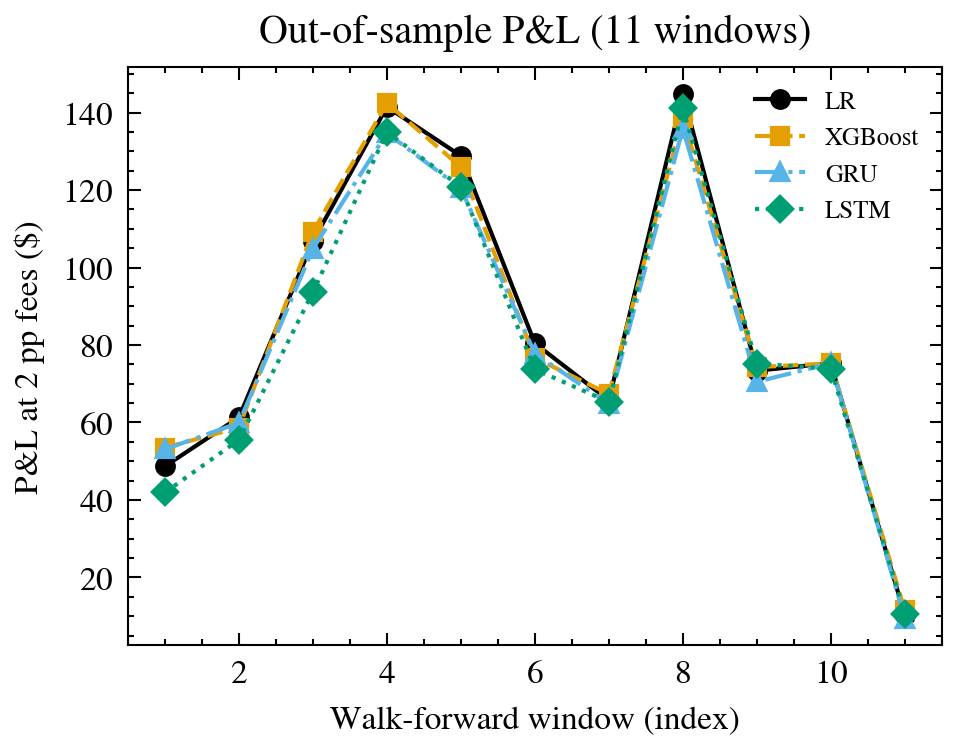

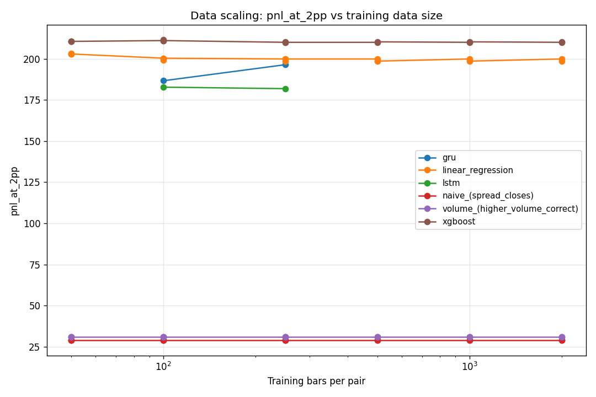

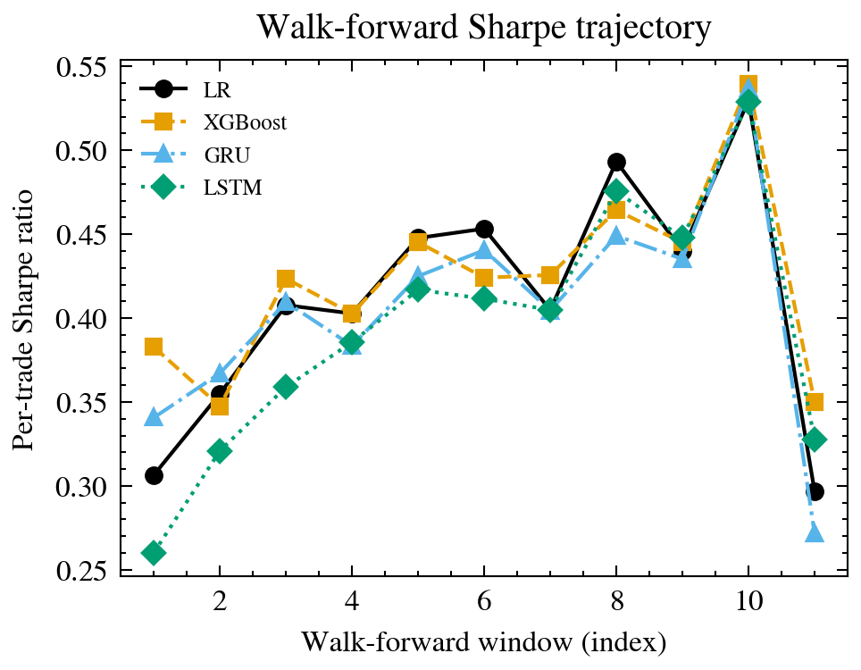

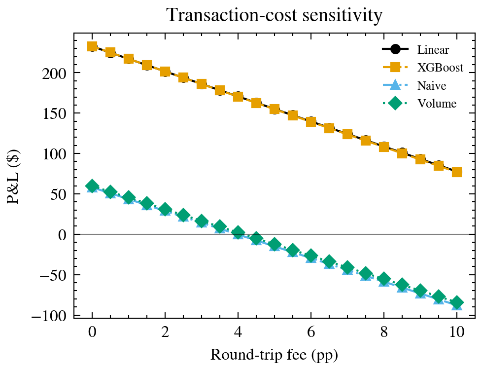

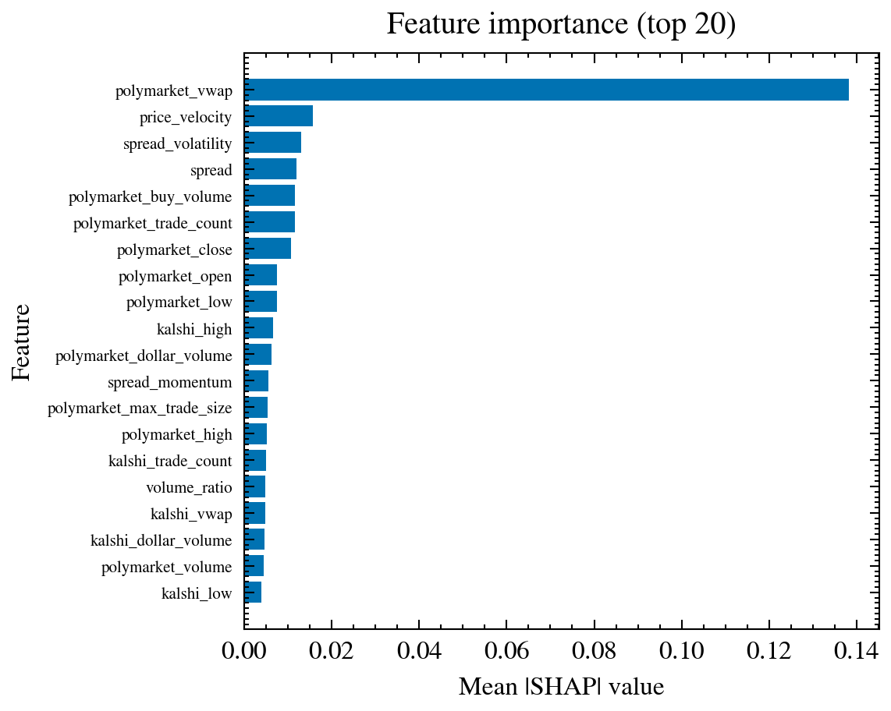
polymarket_vwap dominates at ≈0.14, twice the next feature.
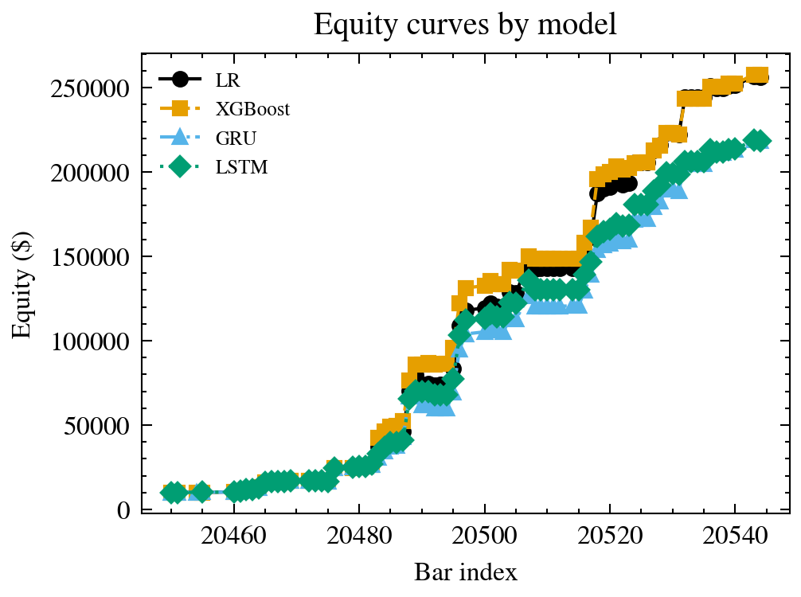

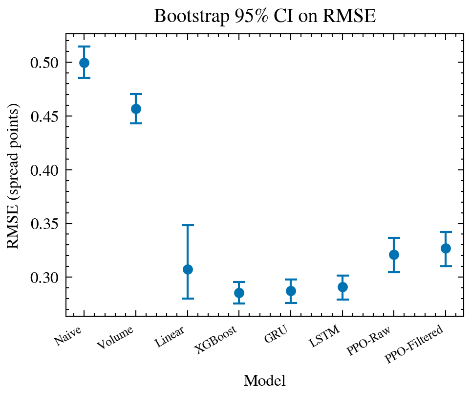

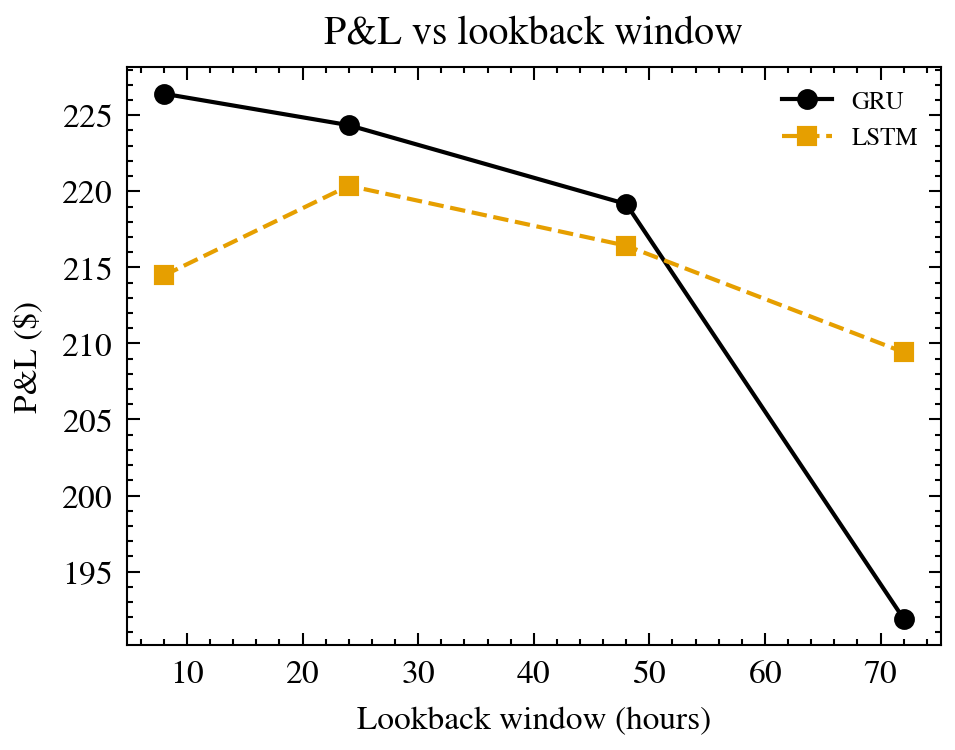

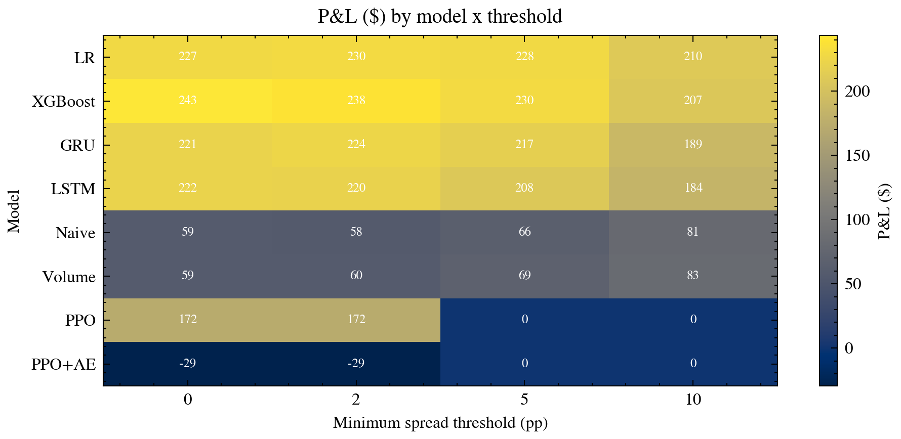

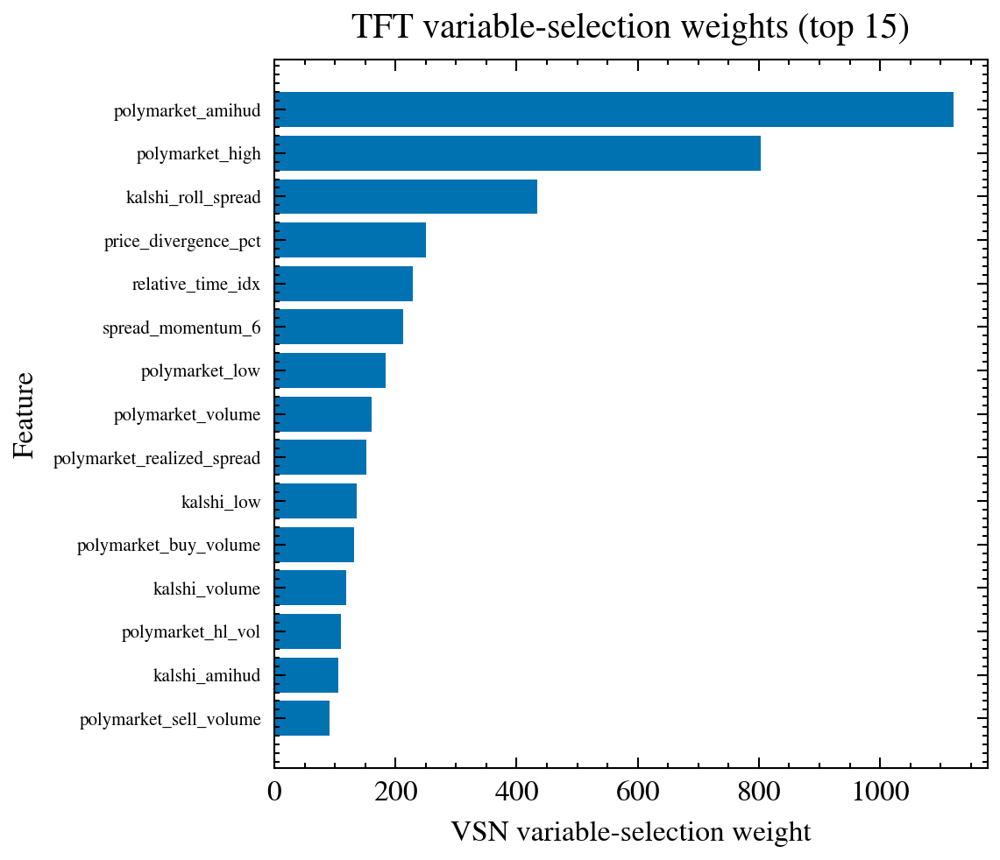

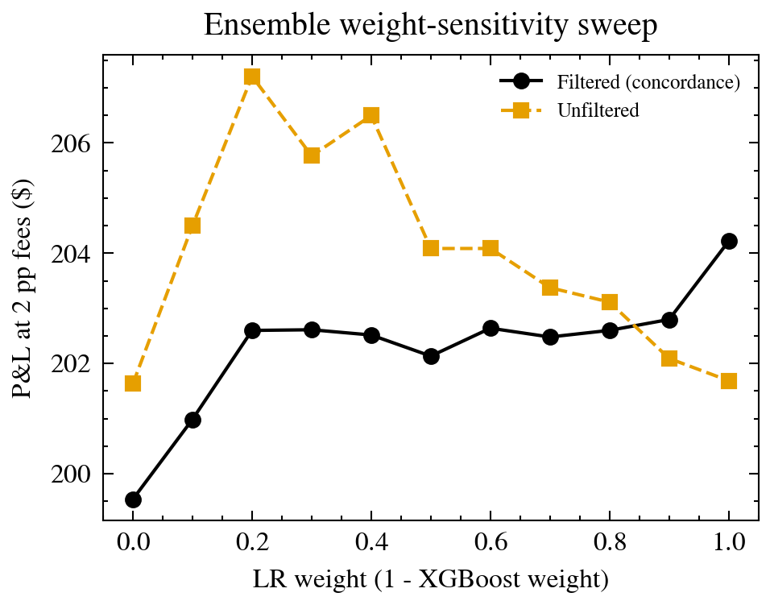